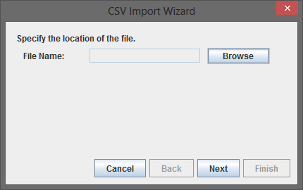
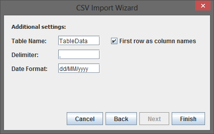
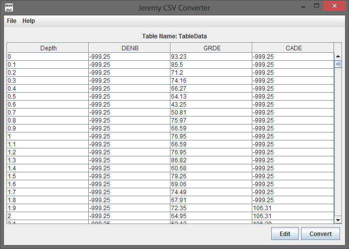
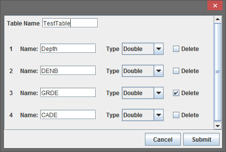
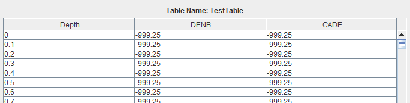
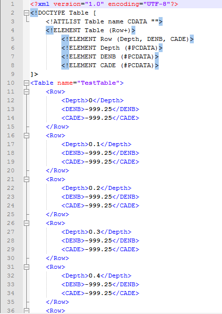

CSV um XML Konversion Lernprogramm
Stufe 1: Importieren Einer CSV-Datei
Öffnen Sie das Menü Datei und klicken Sie auf Öffnen... Menüoption. Dies wird die CSV-Import-Assistenten zu öffnen.

In diesem Tutorial werden wir, mit dem LasData.csv Datei in der Testdata-Ordner, der mit der Anwendung kam entfernt. Wenn der Assistent geöffnet klicken Sie auf die Schaltfläche Durchsuchen, und öffnen Sie die Datei LasData.csv. Klicken Sie auf Weiter, um zum nächsten Schritt des Assistenten zu bewegen.
Dieser Schritt ermöglicht es uns, die Eigenschaften für den CSV Konvertierung gesetzt. Stellen Sie den Tabellennamen als "Table" und klicken Sie auf die erste Zeile als Kontrollkästchen Spaltennamen. Wenn wir eine CSV-Datei, dass es Dateneinträge mit einem Punkt statt Komma getrennt importieren möchten wir, dass der Wandel auf diesem Bildschirm zu machen. Klicken Sie auf Fertig, um den Import abzuschließen.
Wie unten gezeigt sollten nun, dass die Daten in eine Tabelle eingefügt. Klicken Sie auf die Schaltfläche Bearbeiten, um auf die nächste Stufe des Tutorials zu bewegen.
Stufe 2: Ändern Sie die Importierten Daten
Wir können einige nützliche Operationen mit diesem Fenster ausführen: die Tabelle umbenennen, einzelne Spalten umbenennen, Spalten löschen und eine Spalten-Datentyp. Für dieses Tutorial wollen wir die Spalte "GRDE" löschen und die Tabelle umzubenennen, um "Testtable". Um dies zu tun Sie das entsprechende Kontrollkästchen Delete wie unten gezeigt und ersetzen Sie die Tablename mit "Testtable". Klicken Sie auf die Schaltfläche Absenden.
Ihren Tisch auf dem Hauptbildschirm sollte nun wie unten aussehen. Wir sehen, dass der Tabellenname "Testtable" und dass wir jetzt nur noch 3 Spalten statt 4.
Stufe 3: Export als XML-Dokument
Dies ist kaum ein Schritt überhaupt. Konvertieren in XML oder JSON an dieser Stelle ist wirklich einfach. Alles, was Sie tun müssen ist, wählen Sie Ihre Ausgabetyp mit dem Dropdown-Menü aus und klicken Sie auf Speichern, um Ihre gewünschte Datei zu erzeugen.

Klicken Sie auf die Schaltfläche Speichern neben dem XML-File-Etikett. Speichern Sie es irgendwo, dass Sie leicht wieder finden. Um zu überprüfen, dass die Datei erfolgreich öffnen Sie sie in einem beliebigen Editor oder Browser mit XML-Dateien kompatibel umgewandelt. Es sollte wie das unten aussehen.
Wenn Ihr sieht wie das Bild oben, dann Sie getan haben, alles richtig und Sie haben jetzt ein grundlegendes Verständnis des Jeremy Converter funktioniert.